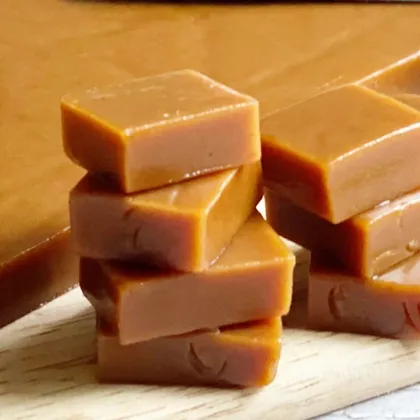

Категория: Шоколад и конфеты
Цена: 298 ₽
Ирис — кондитерское изделие или сладость, которая постоянно удивляет: то она мягкая и нежная, полутвердая.

| Энергетическая ценность на 100 г | |
|---|---|
| Белки | 5.1 |
| Жиры | 9.2 |
| Углеводы | 57.3 |
| Килокалории | 318 |
Молоко цельное сгущенное с сахаром (цельное молоко, сахар), сахар патока, заменитель молочного жира (растительные масла: пальмовое, подсолнечное, пальмоядровое), вода питьевая, соль, ароматизатор «Ванильный».